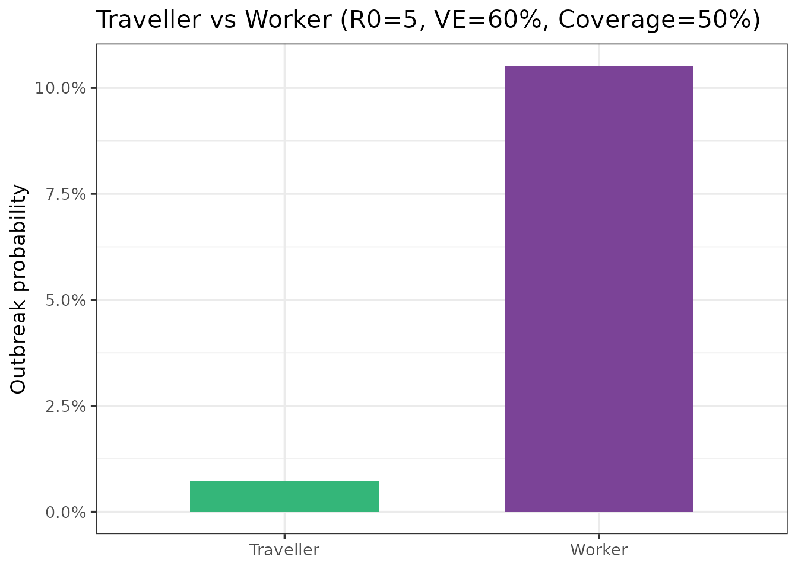
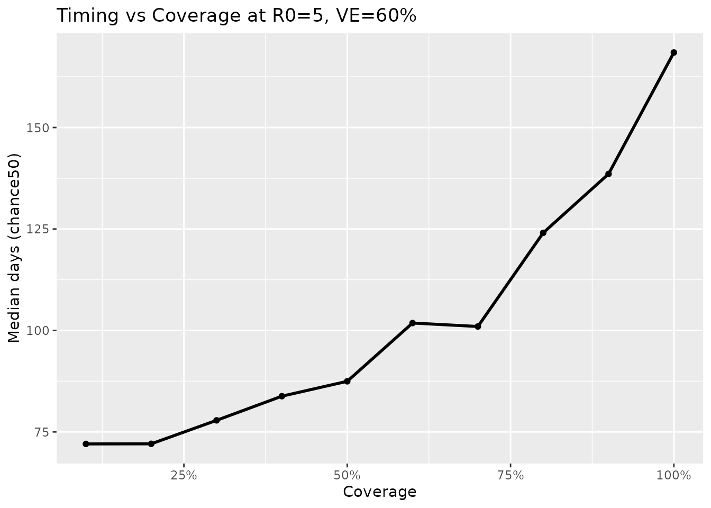
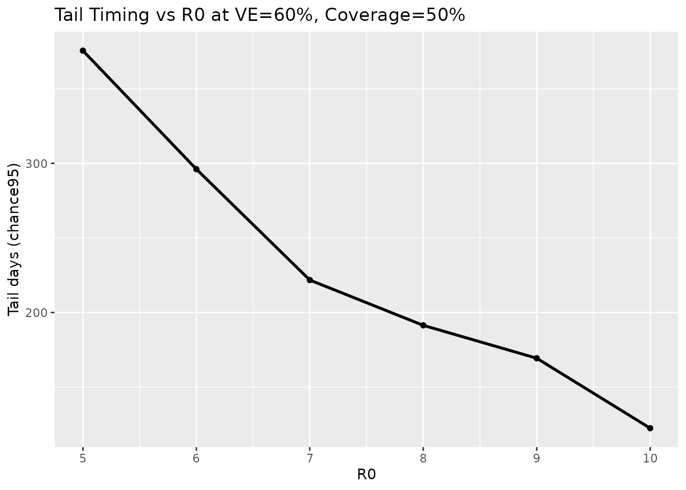

Introduction to quarrisk
Yashitta Bawa
5th November 2025
Source:vignettes/getting-started-quarrisk.Rmd
getting-started-quarrisk.RmdIntroduction
The quarrisk package provides an interactive Shiny dashboard and helper functions to explore quarantine outbreak risk under different assumptions about the basic reproduction number (R₀), vaccine effectiveness (VE), and vaccination coverage.
It includes three tidy datasets:
-
ob_probs_travellers: outbreak probabilities by traveller and worker pathways
-
ob_timings_summary: median (50%) and tail (95%) days until outbreak
-
ob_summary: a joined grid of probabilities + timings across R₀ × VE × coverage
Use the dashboard to scan scenarios quickly, or use the datasets/functions for programmatic analysis.
Installation
Install from GitHub:
# Install devtools if you haven't already
install.packages("remotes")
# Install quarrisk
remotes::install_github("ETC5523-2025/assignment-4-packages-and-shiny-apps-Yashitta")Package Dataset
1. Outbreak probabilities (traveller vs worker)
data(ob_probs_travellers, package = "quarrisk")
ob_probs_travellers |>
dplyr::transmute(
r0, ve, coverage,
`Traveller prob` = scales::percent(traveller_ob_prob, accuracy = 0.01),
`Worker prob` = scales::percent(worker_ob_prob, accuracy = 0.01)
) |>
head(6) |>
knitr::kable(
format = "pipe",
col.names = c("R₀", "VE", "Coverage", "Traveller prob", "Worker prob"),
align = "rrrcc")| R₀ | VE | Coverage | Traveller prob | Worker prob |
|---|---|---|---|---|
| 5 | 0.5 | 0.1 | 0.90% | 14.61% |
| 6 | 0.5 | 0.1 | 1.35% | 16.43% |
| 7 | 0.5 | 0.1 | 1.37% | 17.48% |
| 8 | 0.5 | 0.1 | 1.88% | 18.24% |
| 9 | 0.5 | 0.1 | 2.03% | 19.70% |
| 10 | 0.5 | 0.1 | 2.10% | 20.33% |
Key variables - r0: basic reproduction number - ve: vaccine effectiveness (0–1) - coverage: population coverage (0–1) - traveller_ob_prob, worker_ob_prob: outbreak probabilities by pathway
2. Outbreak timing summary
data(ob_timings_summary, package = "quarrisk")
ob_timings_summary |>
dplyr::transmute(
r0, ve, coverage,
`Median days (chance50)` = round(chance50, 2),
`Tail days (chance95)` = round(chance95, 2)
) |>
head(6) |>
knitr::kable(
format = "pipe",
col.names = c("R₀","VE","Coverage","Median days (chance50)","Tail days (chance95)"),
align = "rrrcc")| R₀ | VE | Coverage | Median days (chance50) | Tail days (chance95) |
|---|---|---|---|---|
| 5 | 0.5 | 0.1 | 46.27 | 198.83 |
| 6 | 0.5 | 0.1 | 29.48 | 128.47 |
| 7 | 0.5 | 0.1 | 25.76 | 108.35 |
| 8 | 0.5 | 0.1 | 20.29 | 87.99 |
| 9 | 0.5 | 0.1 | 15.72 | 68.73 |
| 10 | 0.5 | 0.1 | 15.06 | 64.61 |
Key variables - chance50: median days until outbreak - chance95: tail (95th percentile) days until outbreak
3. Combined grid (probabilities + timings)
data(ob_summary, package = "quarrisk")
ob_summary |>
dplyr::mutate(
traveller_ob_prob = scales::percent(traveller_ob_prob, accuracy = 0.01),
worker_ob_prob = scales::percent(worker_ob_prob, accuracy = 0.01),
chance50 = round(chance50, 1),
chance95 = round(chance95, 1)
) |>
dplyr::select(r0, ve, coverage,
traveller_ob_prob, worker_ob_prob,
chance50, chance95) |>
head(6) |>
knitr::kable(
format = "pipe",
col.names = c("R₀", "VE", "Coverage",
"Traveller prob", "Worker prob",
"Median days", "Tail days"),
align = "rrrccrr")| R₀ | VE | Coverage | Traveller prob | Worker prob | Median days | Tail days |
|---|---|---|---|---|---|---|
| 3 | 0 | 0.1 | 1.29% | 15.66% | 16.4 | 70.4 |
| 3 | 0 | 0.2 | 1.30% | 15.83% | 15.7 | 69.5 |
| 3 | 0 | 0.3 | 1.38% | 15.53% | 15.6 | 68.3 |
| 3 | 0 | 0.4 | 1.26% | 15.78% | 16.6 | 70.9 |
| 3 | 0 | 0.5 | 1.27% | 15.76% | 16.4 | 70.7 |
| 3 | 0 | 0.6 | 1.27% | 15.56% | 16.4 | 71.3 |
This is a convenient join across the full scenario grid (R₀ × VE × coverage).
Quick Start: Interactive Dashboard
Launch the Shiny dashboard:
run_app()The app provides three tabs: - Overview — Nearest scenario to your chosen R₀/VE/coverage, value boxes, quick traveller vs worker comparison - Risk Explorer — Lines (probability vs VE) and heatmap (probability over R₀ × coverage) - Timing Summary — Median (chance50) and tail (chance95) days vs coverage/R₀
Basic Exploration
Compare traveller vs worker probabilities at a fixed scenario
picked <- ob_summary |>
dplyr::filter(r0 == 5, ve == 0.6, coverage == 0.5) |>
dplyr::transmute(
r0, ve, coverage,
traveller = traveller_ob_prob,
worker = worker_ob_prob,
gap = traveller - worker
)
picked |>
dplyr::transmute(
r0, ve, coverage,
`Traveller prob` = scales::percent(traveller, accuracy = 0.01),
`Worker prob` = scales::percent(worker, accuracy = 0.01),
`Gap` = scales::percent(gap, accuracy = 0.01)
) |>
knitr::kable(
format = "pipe",
col.names = c("R₀","VE","Coverage","Traveller prob","Worker prob","Gap"),
align = "rrrccc")| R₀ | VE | Coverage | Traveller prob | Worker prob | Gap |
|---|---|---|---|---|---|
| 5 | 0.6 | 0.5 | 0.74% | 10.52% | -9.78% |
A quick bar comparison:
bar <- picked |>
tidyr::pivot_longer(
cols = tidyselect::any_of(c("traveller_ob_prob","worker_ob_prob","traveller","worker")),
names_to = "pathway", values_to = "prob"
) |>
dplyr::filter(!is.na(prob)) |>
dplyr::mutate(
pathway = dplyr::recode(
pathway,
traveller_ob_prob = "Traveller",
worker_ob_prob = "Worker",
traveller = "Traveller",
worker = "Worker"
)
)
ggplot2::ggplot(bar, ggplot2::aes(pathway, prob, fill = pathway)) +
ggplot2::geom_col(width = 0.6) +
ggplot2::scale_y_continuous(labels = scales::percent) +
ggplot2::scale_fill_manual(values = c("Traveller" = "#34b679", "Worker" = "#7b4397")) +
ggplot2::labs(x = NULL, y = "Outbreak probability",
title = "Traveller vs Worker (R0=5, VE=60%, Coverage=50%)") +
ggplot2::theme_bw(base_size = 13) +
ggplot2::theme(legend.position = "none")
Probability vs VE at fixed R₀ & coverage
Use the exported helper plot_risk_vs_ve():
r0_val <- 5
cov_val <- 0.5
p <- ob_summary |>
dplyr::filter(r0 == r0_val, coverage == cov_val) |>
tidyr::pivot_longer(
c(traveller_ob_prob, worker_ob_prob),
names_to = "pathway", values_to = "prob"
) |>
dplyr::mutate(
pathway = dplyr::recode(pathway,
traveller_ob_prob = "Traveller",
worker_ob_prob = "Worker"
)
)
ggplot2::ggplot(p, ggplot2::aes(ve, prob, linetype = pathway)) +
ggplot2::geom_line(linewidth = 1) +
ggplot2::scale_y_continuous(labels = scales::percent) +
ggplot2::labs(
x = "VE", y = "Outbreak probability", linetype = "Pathway",
title = sprintf("R0 = %.1f, coverage = %.2f", r0_val, cov_val))
Timing profiles
Median days until outbreak across coverage (for fixed R₀ and VE):
tc <- ob_summary |>
dplyr::filter(r0 == 5, ve == 0.6) |>
dplyr::arrange(coverage)
ggplot2::ggplot(tc, ggplot2::aes(coverage, chance50)) +
ggplot2::geom_line(linewidth = 1) +
ggplot2::geom_point(size = 1.5) +
ggplot2::scale_x_continuous(labels = scales::percent) +
ggplot2::labs(
x = "Coverage", y = "Median days (chance50)",
title = "Timing vs Coverage at R0=5, VE=60%"
)
Tail days vs R₀ (for fixed VE and coverage):
tail_timing_by_r0 <- ob_summary |>
dplyr::filter(ve == 0.6, coverage == 0.5) |>
dplyr::arrange(r0)
ggplot2::ggplot(tail_timing_by_r0, ggplot2::aes(r0, chance95)) +
ggplot2::geom_line(linewidth = 1) +
ggplot2::geom_point(size = 1.5) +
ggplot2::labs(
x = "R0", y = "Tail days (chance95)",
title = "Tail Timing vs R0 at VE=60%, Coverage=50%")
Helper Functions
-
slice_scenario(r0, ve, coverage)— returns rows matching (or nearest to) a scenario -
plot_risk_vs_ve(r0, coverage, data)— line plot of outbreak probability vs VE Example:
tab <- quarrisk::slice_scenario(ob_summary, r0 = 5, ve = 0.6, coverage = 0.5) |>
dplyr::transmute(
r0, ve, coverage,
`Traveller prob` = scales::percent(traveller_ob_prob, accuracy = 0.01),
`Worker prob` = scales::percent(worker_ob_prob, accuracy = 0.01),
`Median days` = round(chance50, 2),
`Tail days` = round(chance95, 2)
)
knitr::kable(tab, format="pipe",
col.names=c("R₀","VE","Coverage","Traveller prob",
"Worker prob","Median days","Tail days"),
align="rrrccrr")| R₀ | VE | Coverage | Traveller prob | Worker prob | Median days | Tail days |
|---|---|---|---|---|---|---|
| 5 | 0.6 | 0.5 | 0.74% | 10.52% | 87.47 | 375.56 |
Best Practices
- Use percentages when scanning heatmaps/lines (format VE and coverage with scales::percent).
- Compare pathways — traveller vs worker risks can diverge at the same scenario.
- Look at timing, not just probability — longer chance50/chance95 may buy response time.
- Context matters — the same probability can imply different operational risks depending on volume, import controls, and response capacity.
Next Steps
- Launch the dashboard:
run_app() - Browse the function docs:
?run_app,?slice_scenario,?plot_risk_vs_ve - Explore datasets:
?ob_summary,?ob_probs_travellers,?ob_timings_summary